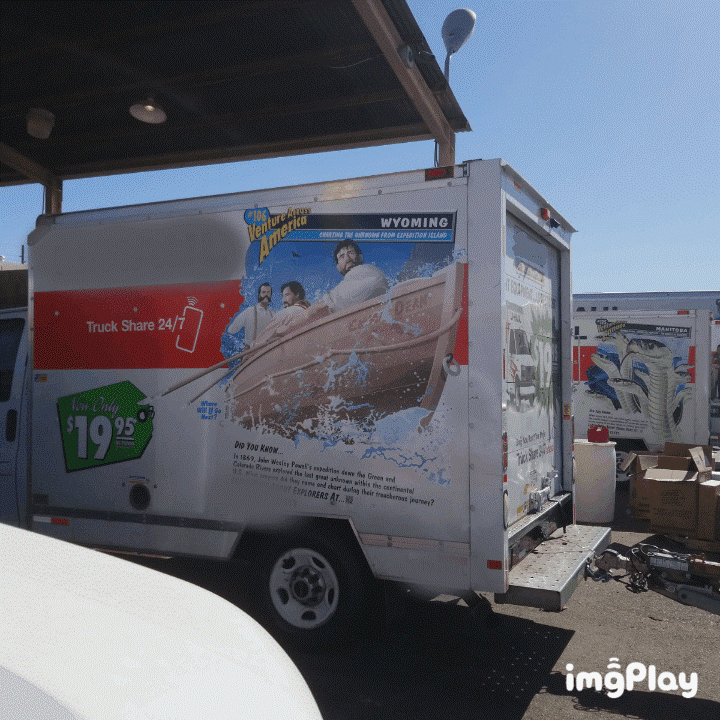
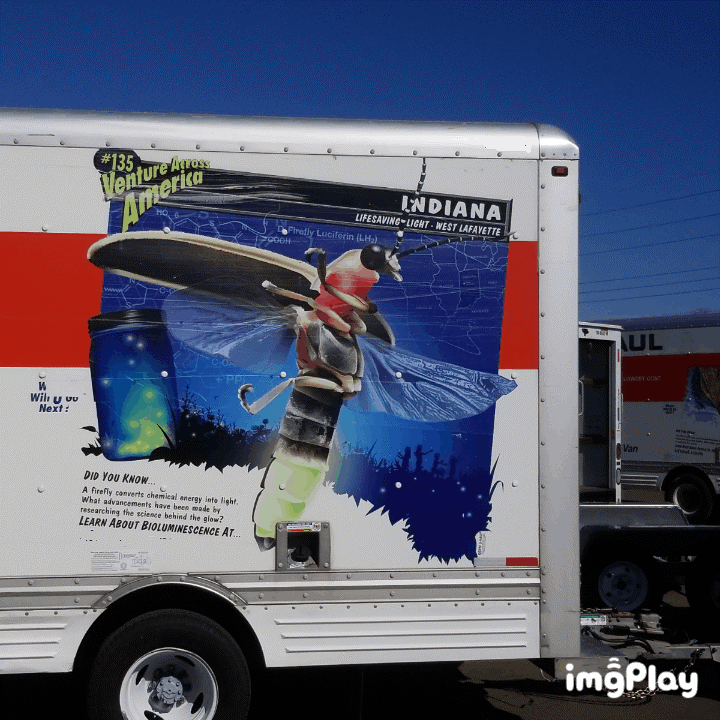
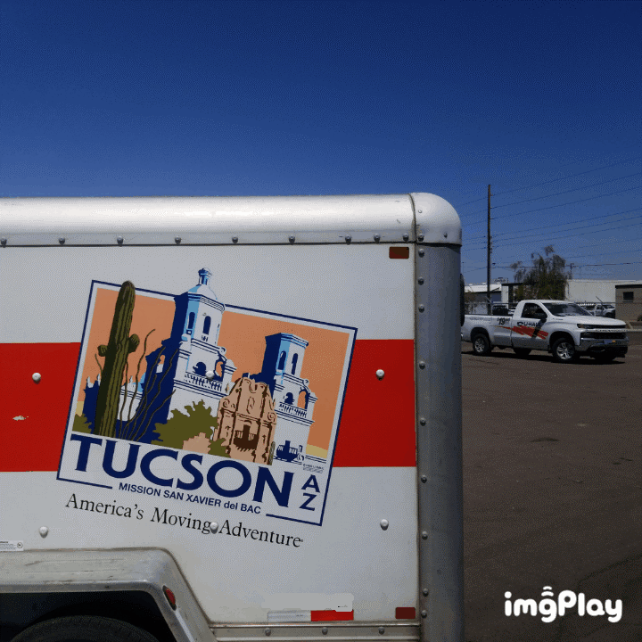

You've got your basic everyday logo shown above here, been in existance for a good while.
Then you've got a logo from the early days at the company (above). This is still an internal logo. There must have been a decision to use this less as an overall business logo, most likely because the present day logo must add to sales.


Apart from the logos, there are depictions which one may see while out and about (The above two depictions). The Unit / Trailer numbers were, sort of, "blotted out" on these to keep things anonymous. It's harder to tell what "The Company" is, because these things were blotted out.
The "early" logo has been shrunk way way down, and placed into these vehicle graphics. For all of the trucks which have these info graphics placed on them, there was a portion of them placed into use without the "shrunk way down" original logo (without any logo)

The final depiction here is of one of the trailers. This is what I refer to as a "destination graphic", the other ones above (after the two logos -- but before this trailer depiction) are more or less, "info graphics". The "destination graphics" do not have that internal type logo embedded -- only the "info graphic" ones.
Hopefully, some small amount of sense can be drawn out of all that I have scralled down here.